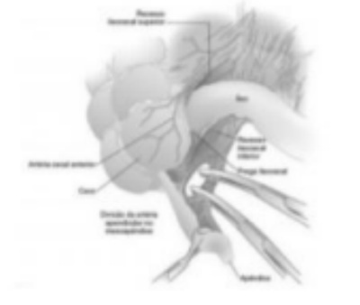
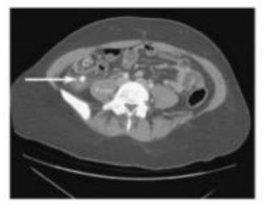
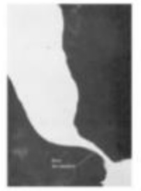
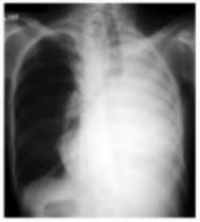
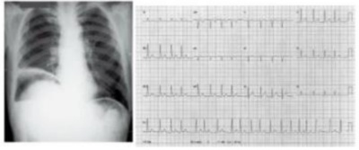

Questão 1 · Diagnóstico · 4000170884Determinado a partir desse foco inicial, pode ocorrer a progressão para necrose caseosa, eliminação do material necrótico e disseminação broncogênica da tuberculose. As apresentações radiológicas dessa fase são as cavidades, consolidações, nódulos, massas ou opacidades retículo-nodulares. Podemos indicar que:
A O acometimento das cadeias ganglionares depende da localização do processo inflamatório no parênquima pulmonar.
B O acometimento das cadeias ganglionares independe da localização do processo inflamatório no parênquima pulmonar.
C O acometimento das cadeias ganglionares depende da localização do processo inflamatório na pleura.
D O acometimento das cadeias neuronais depende da localização do processo inflamatório no parênquima pulmonar.
Questão 2 · Hemoglobina glicada HbA1c · 4000170883A porcentagem da hemoglobina que sofreu glicação será tanto maior quanto maior a concentração de glicose sanguínea. Esse resultado expresso em porcentagem refere-se à média das glicemias diárias, sendo 50% correspondente ao mês que precedeu o exame, 25% ao mês anterior à coleta e 25% ao terceiro e quarto meses anteriores. Sendo adequado o item:
A Em outras situações clínicas, como insuficiência renal ou hepática, que protegem ao aparecimento de hipoglicemia, o alvo glicêmico pode ser um pouco mais elevado do que o habitual.
B Em outras situações clínicas, como insuficiência renal ou hepática, que predispõem ao aparecimento de hipoglicemia, o alvo glicêmico pode ser um pouco mais baixo do que o habitual.
C Em outras situações clínicas, como insuficiência renal ou hepática, que predispõem ao aparecimento de hipoglicemia, o alvo glicêmico pode ser um pouco mais elevado do que o habitual.
D Em outras situações clínicas, como insuficiência renal ou hepática, que não predispõem ao aparecimento de hipoglicemia, o alvo glicêmico pode ser um pouco mais elevado do que o habitual.
Questão 3 · Modif icações f isiológicas da gestação · 4000170882A medicina individualiza cada vez mais a abordagem das diversas patologias, sobretudo quanto ao gênero, pois isso está de acordo com o item:
A Uma vez que o organismo feminino não difere do masculino, particularmente durante o ciclo gravídico-puerperal.
B Uma vez que o organismo feminino difere, em muito, do masculino, exceto durante o ciclo gravídico-puerperal.
C Uma vez que o organismo feminino difere, em muito, do masculino, particularmente durante o ciclo gravídico- puerperal.
D Uma vez que o organismo feminino é igual ao masculino, particularmente durante o ciclo gravídico-puerperal.
Questão 4 · Tuberculose óssea mal de Pott · 4000170881Podemos indicar como inadequado a respeito de Tuberculose TB óssea o seguinte item:
A Na TB óssea, a destruição da porção anterior dos corpos vertebrais e áreas de osteólise, principalmente em epífise de ossos longos, sugere doença em atividade.
B O acometimento de tecidos moles adjacentes, como abscessos para vertebrais visualizados na RNM, também sugere doença ativa.
C A involução desses achados adjacentes às alterações ósseas na RNM é útil no acompanhamento da doença e pode, em conjunto com critérios clínicos, definir a alta do tratamento das formas ósseas.
D Na TB óssea, a destruição da porção anterior dos corpos vertebrais e áreas de osteólise, principalmente em epífise de ossos longos, sugere doença em regressão.
Questão 5 · Reabilitação cardíaca · 4000170880A RCV - Reabilitação Cardiovascular Domiciliar compõe o tratamento clínico pleno dos pacientes estáveis com Doença Cardiovascular, o que se mostra correto de acordo com o item:
A Exige a integração do médico assistente, que, ao encaminhar o seu paciente, deve ter conhecimento das indicações e dos benefícios a serem obtidos, adotando as necessárias providências clínicas pré-participação.
B Não exige a integração do médico assistente, que, ao encaminhar o seu paciente, deve ter conhecimento das indicações e dos benefícios a serem obtidos, adotando as necessárias providências clínicas pré-participação.
C Exige a integração do médico assistente, que, ao encaminhar o seu paciente, não deve ter conhecimento das indicações e dos benefícios a serem obtidos, adotando as necessárias providências clínicas pré-participação.
D Exige a integração do médico assistente, que, ao encaminhar o seu paciente, deve ter conhecimento das indicações e dos benefícios a serem obtidos, sendo impedido de adotar as necessárias providências clínicas pré- participação.
Questão 6 · Tratamento · 4000170879A cintilogra a pulmonar ventilação-perfusão pode ser útil na avaliação pré operatória de pacientes com indicação de cirurgia para tratamento da tuberculose, sendo adequado o item:
A Porém, não identificando áreas com déficit ventilatório e/ou perfusional.
B Identificando áreas com déficit ventilatório e não do perfusional.
C Identificando áreas com déficit apenas perfusional.
D Identificando áreas com déficit ventilatório e/ou perfusional.
Questão 7 · Reabilitação cardíaca · 4000170878Estudos clínicos randomizados, que demonstram significativas reduções da morbimortalidade cardiovascular e global, em como da taxa de hospitalização, com expressivo ganho de qualidade de vida, justi cando a sua consensual e enfática recomendação pelas principais sociedades médicas mundiais dos efeitos favoráveis da Reabilitação Cardiovascular (RCV).
A O principal objetivo da RCV com ênfase nos exercícios físicos é propiciar uma melhora dos componentes da aptidão física, aeróbico e nunca dos não aeróbicos (força/ potência muscular, flexibilidade, equilíbrio).
B O principal objetivo da RCV com ênfase nos exercícios físicos é não propiciar uma melhora dos componentes da aptidão física, tanto aeróbico quanto não aeróbicos (força/ potência muscular, flexibilidade, equilíbrio).
C O principal objetivo da RCV com ênfase nos exercícios físicos é propiciar uma melhora dos componentes da aptidão física, tanto aeróbico quanto não aeróbicos (força/ potência muscular, flexibilidade, equilíbrio).
D O principal objetivo da RCV com ênfase nos exercícios físicos é propiciar uma melhora dos componentes da aptidão física, somente aeróbico (força/ potência muscular, flexibilidade, equilíbrio).
Questão 8 · Hemoglobina glicada HbA1c · Diabetes Mellitus tipo 1A · 4000170877HbA1c é considerada o exame padrão-ouro para avaliar o controle metabólico do indivíduo com DM1, já que cou consistentemente demonstrada a relação entre níveis aumentados e risco de complicação microvascular. Podemos indicar como correto que:
A A determinação da HbA1c não possibilita estimar quão elevadas as glicemias estiveram nos últimos 3 a 4 meses. Tal estimativa torna-se possível pelo fato de a glicose sanguínea ligar-se de maneira irreversível à hemoglobina durante o período de vida da hemácia, que tem essa duração.
B A determinação da HbA1c possibilita estimar quão elevadas as glicemias estiveram nos últimos 3 a 4 meses. Tal estimativa torna se possível pelo fato de a glicose sanguínea ligar-se de maneira irreversível à hemoglobina durante o período de vida da hemácia, que tem essa duração.
C A determinação da HbA1c possibilita estimar quão elevadas as glicemias estiveram nos últimos 3 a 4 meses. Tal estimativa torna se possível pelo fato de a glicose sanguínea ligar-se de maneira irreversível à hemoglobina durante o período de vida da hemácia, que não tem essa duração.
D A determinação da HbA1c possibilita estimar quão elevadas as glicemias estiveram nos últimos 3 a 4 meses. Tal estimativa torna se impossível pelo fato de a glicose sanguínea ligar-se de maneira irreversível à hemoglobina durante o período de vida da hemácia, que tem essa duração.
Questão 9 · A mortalidade materna no Brasil · 4000170876Apresenta grande importância discutir sobre as patologias cardiovasculares mais prevalentes que acometem a mulher durante o ciclo gravídico-puerperal e para as quais não existem evidências substanciais ou ensaios clínicos randomizados. Sendo, entretanto, adequado o item:
A Incidindo em 40% das gestações, a cardiopatia, por si só, continua sendo, no mundo, a principal causa não obstétrica de morte materna.
B Incidindo em 4% das gestações, a cardiopatia, por si só, continua sendo, no mundo, a principal causa obstétrica de morte materna.
C Incidindo em 4% das gestações, a cardiopatia, por si só, continua sendo, no mundo, a principal causa não obstétrica de morte materna.
D Incidindo em 4% das gestações, a cardiopatia, não é mais a principal causa não obstétrica de morte materna.
Questão 10 · Tratamento · 4000170875É objetivo do tratamento do paciente com diabetes mellitus (DM) o bom controle metabólico, diminuindo, assim, os riscos de complicações micro e macrovasculares. No arsenal disponível à avaliação do controle glicêmico, podemos indicar como correto o item:
A Encontram-se a hemoglobina glicada (HbA1c), as glicemias capilares diárias (que permitem o cálculo da glicemia média estimada), o desvio-padrão da média da glicemia (que ilustra a variabilidade glicêmica) e o tempo no alvo, isto é, aquele em que o paciente esteve dentro da faixa recomendada de glicemia.
B Encontram-se a hemoglobina glicada (HbA1c), as glicemias capilares diárias (que não permitem o cálculo da glicemia média estimada), o desvio-padrão da média da glicemia (que ilustra a variabilidade glicêmica) e o tempo no alvo, isto é, aquele em que o paciente esteve dentro da faixa recomendada de glicemia.
C Encontram-se a hemoglobina glicada (HbA1c), as glicemias capilares diárias (que permitem o cálculo da glicemia média estimada), o desvio-padrão da média da glicemia (que ilustra a variabilidade glicêmica) e o tempo no alvo, isto é, aquele em que o paciente esteve fora da faixa recomendada de glicemia.
D Encontram-se a hemoglobina glicada (HbA1c), e não as glicemias capilares diárias (que permitem o cálculo da glicemia média estimada), o desvio-padrão da média da glicemia (que ilustra a variabilidade glicêmica) e o tempo no alvo, isto é, aquele em que o paciente esteve dentro da faixa recomendada de glicemia.
Questão 11 · Reabilitação cardíaca · 4000170874Os efeitos favoráveis da Reabilitação Cardiovascular (RCV) com ênfase nos exercícios físicos têm sido consistentemente documentados, podemos assim afirmar que:
A Existindo uma forte e inversa dissociação dos diferentes componentes da aptidão física com a mortalidade por todas as causas e com a ocorrência de eventos cardiovasculares desfavoráveis.
B Existindo uma forte e inversa associação dos diferentes componentes da aptidão física com a mortalidade por todas as causas e com a ocorrência de eventos cardiovasculares favoráveis.
C Existindo uma fraca e inversa associação dos diferentes componentes da aptidão física com a mortalidade por todas as causas e com a ocorrência de eventos cardiovasculares desfavoráveis.
D Existindo uma forte e inversa associação dos diferentes componentes da aptidão física com a mortalidade por todas as causas e com a ocorrência de eventos cardiovasculares desfavoráveis.
Questão 12 · A mortalidade materna no Brasil · Fatores que inf luenciam na mortalidade materna · 4000170873Embora a taxa de mortalidade materna esteja ainda aquém das metas estimadas para este milênio
A nas três últimas décadas o Brasil registrou importante aumento no coeficiente de mortalidade materna em decorrência de complicações durante o ciclo gravídico puerperal.
B nas três últimas décadas o Brasil registrou importante redução no coeficiente de mortalidade materna em decorrência de complicações durante o ciclo gravídico puerperal.
C nas três últimas décadas o Brasil registrou importante redução no coeficiente de mortalidade materna sem nexo com complicações durante o ciclo gravídico-puerperal.
D nas três últimas décadas o Brasil registrou nenhuma redução no coeficiente de mortalidade materna em decorrência de complicações durante o ciclo gravídico puerperal.
Questão 13 · Estratif icação do risco cardiovascular global e metas terapêuticas · 4000170872O sedentarismo, que apresenta elevada prevalência no Brasil e no mundo, está fortemente relacionado às Doenças Cardiovasculares (DCV) e à mortalidade precoce. Podemos assim, aceitar o item:
A Maiores volumes de atividade física são positivamente associados à melhor qualidade e à maior expectativa de vida.
B Maiores volumes de atividade física não são positivamente associados à melhor qualidade e à maior expectativa de vida.
C Maiores volumes de atividade física são positivamente associados à pior qualidade e à maior expectativa de vida.
D Maiores volumes de atividade física são positivamente associados à melhor qualidade, mas não maior expectativa de vida.
Questão 14 · Fisiologia do pâncreas endócrino · Diabetes Mellitus tipo 1A · 4000170871Ainda nos anos 1930, Himsworth e Kerr introduziram o primeiro procedimento padrão para o estudo da resistência à insulina in vivo. Demonstrando que pequenas doses de insulina eram adequadas para indivíduos jovens com formas mais intensas da doença e propensos à cetose. Sendo correto o item:
A Indivíduos jovens e magros, menos propensos à cetose, são mais sensíveis à insulina do que os mais velhos e obesos não propensos à cetose.
B Indivíduos jovens e magros, propensos à cetose, são mais sensíveis à insulina do que os mais velhos e obesos propensos à cetose.
C Indivíduos jovens e magros, propensos à cetose, são mais sensíveis à insulina do que os mais velhos e obesos não propensos à cetose.
D Indivíduos jovens e magros, propensos à cetose, são mais resistentes à insulina do que os mais velhos e obesos não propensos à cetose.
Questão 15 · Prof ilaxia préexposição PrEP · 4000170870A abordagem Pro laxia Pré-Exposição (PrEP) de Risco à Infecção pelo HIV reconhece que as escolhas são feitas considerando diferentes pertencimentos culturais, inserções comunitárias e histórias de vida, que in uenciarão nos modos como os métodos de prevenção são adotados ao longo da vida. Assim, podemos concordar com o item:
A A partir do conhecimento das alternativas de prevenção, não se deve conversar com o indivíduo sobre a possibilidade de realizar o gerenciamento de risco, conforme suas práticas sexuais.
B A partir do conhecimento das alternativas de prevenção, deve-se conversar com o indivíduo sobre a possibilidade de realizar o gerenciamento de risco, independentemente de suas práticas sexuais.
C A partir do conhecimento das alternativas de prevenção, deve-se conversar com o indivíduo sobre a possibilidade de realizar o gerenciamento de risco, conforme suas práticas sexuais.
D A partir do conhecimento das alternativas de prevenção, deve-se conversar com o indivíduo sobre a possibilidade de realizar o gerenciamento de risco, proibindo suas práticas sexuais.
Questão 16 · Prof ilaxia préexposição PrEP · 4000170869Devem também ser considerados outros indicativos para caracterização indivíduos com exposição frequente ao HIV, tais como os listados abaixo, indique o item errado:
A Repetição de práticas sexuais anais e/ou vaginais com penetração com o uso de preservativo.
B Frequência das relações sexuais com parcerias eventuais.
C Quantidade e diversidade de parcerias sexuais.
D Histórico de episódios de Infecções Sexualmente Transmissíveis (IST).
Questão 17 · Rastreamento do câncer de mama · 4000170868O uso do ultrassom em rastreamento mamário apresenta como principal limitação a dificuldade de visualização de
A nódulos sólidos.
B microcalcificações agrupadas.
C Fibroadenomas.
D cistos espessos.
Questão 18 · Hipertensão gestacional · Distúrbios hipertensivos na gestação DHEG · 4000170867Gestante previamente normotensa, com aferição de pressão arterial em consultório de 145x90 mmHg, submetida a aferições domiciliares sem nunca ultrapassar 135x85 mmHg. Segundo a mais moderna classificação de quadros hipertensivos na gravidez, se trata de
A pré-eclampsia leve.
B pré-eclâmpsia grave.
C hipertensão do jaleco branco.
D hipertensão crônica.
Questão 19 · Diagnósticos dif erenciais de hiperandrogenismo · 4000170866Os diagnósticos diferenciais no quadro de hiperandrogenismo e o exame laboratorial mais adequado para diagnóstico são, exceto
A Hiperprolactinemia – dosagem de prolactina.
B Tumor adrenal – dosagem de DHEA sulfatada.
C Hiperplasia adrenal congênita – dosagem de 17 alfa hidroxiporgesterona.
D Disfunção tiroidiana –dosagem de T4 total.
Questão 20 · Tocólise · 4000170865Droga considerada promissora para uso doméstico na terapia de manutenção pós tocólise hospitalar.
A Terbutalina.
B Progesterona Micronizada.
C Sulfato de Magnésio.
D Atosiban.
Questão 21 · Videolaparoscopia · 4000170864A videolaparoscopia já teve papel fundamental no diagnóstico de endometriose, porém, atualmente, com o aprimoramento dos métodos de imagem, sua principal indicação é
A somente para estadiamento.
B para pacientes que tem exames radiológicos normais e falha no tratamento clínico.
C para pacientes com quadros leves.
D para pacientes em tratamento de infertilidade de causa ovariana.
Questão 22 · Criterios diagnósticos da préeclampsia · Etiologia e f isiopatologia · 4000170863Os quadros hipertensivos na gravidez associados a alterações da circulação útero placentária e restrição de crescimento fetal são geralmente classificados como
A pré-eclâmpsia de início precoce.
B pré-eclâmpsia sobreposta.
C hipertensão crônica sem pré-eclâmpsia.
D hipertensão transitória.
Questão 23 · Critérios diagnósticos de síndrome metabólica · 4000170862Para o diagnóstico de Síndrome Metabólica segundo o AdultTreatment Panel III (ATP III), são consideradas as seguintes referências, exceto
A cintura abdominal maior que 88 cm.
B triglicerídeos acima de 150 mg/dl.
C HDL colesterol acima de 50 mg/dl.
D glicose acima de 100 mg/dl.
Questão 24 · Criterios diagnósticos da préeclampsia · PréEclâmpsia · 4000170861Fator responsável pela diminuição da contagem de plaquetas em gestantes com pré-eclâmpsia é
A perda de plaquetas para o espaço extravascular.
B adesão das plaquetas ao endotélio lesionado.
C descolamento de placenta subclínico.
D anemia crônica.
Questão 25 · Clamídia · 4000170860O tratamento mais adequado para uretrite por Clamídia fora da gestação é
A Ampicilina via oral.
B Ceftriaxona via endovenosa.
C Metronidazol via oral.
D Azitromicina via oral.
Questão 26 · Interpretação · 4000170859Considere as assertivas em relação à cardiotocografia. I. Traçado categoria I: feto hígido. II. Traçado categoria II (indeterminado): repetir o exame em 1 semana. III. Traçado categoria III: provavelmente interrupção da gravidez por hipoxemia fetal. IV. Traçado categoria II: sem necessidade de complementação com outros exames. Estão corretas as assertivas
A I e III
B I e II
C II e III
D II e IV
Questão 27 · Lesões diversas da mama · Desenvolvimento das mamas · 4000170858A alteração mamária congênita ocasionada por agenesia da porção esternal do músculo peitoral maior tem o nome de
A Síndrome de Sthein-Leventhal.
B Síndrome de Morrisom.
C Doença de Mondor.
D Síndrome de Poland.
Questão 28 · Malf ormações f etais · 4000170857Gestante em acompanhamento pré-natal comparece a consulta de rotina com ultrassom evidenciando gestação de 24 semanas com oligodramnio absoluto e feto com agenesia renal bilateral. Pensando ser Síndrome de Potter, o obstetra orienta a gestante que o feto provavelmente terá
A hipoplasia pulmonar.
B malformação neurológica.
C atresia de esôfago.
D hérnia de diafragma.
Questão 29 · Interações medicamentosas · 4000170856Droga que não tem interação medicamentosa com anticoncepcionais orais.
A Fenitoína.
B Topiramato.
C Rifampicina.
D Cefalosporina.
Questão 30 · Quadro clínico · Diagnóstico · 4000170855Gestante de 38 semanas comparece à emergência referindo rompimento de bolsa amniótica há 1 hora, cursando com saída de grande quantidade de líquido amniótico claro com grumos. Durante o atendimento, passa a apresentar tetania uterina e sangramento vaginal de moderada quantidade e bradicardia fetal. O diagnóstico mais provável no momento é
A rotura de seio marginal.
B rotura de vasa prévia.
C descolamento de placenta.
D sangramento do colo uterino após toque.
Questão 31 · Diagnóstico e Exames Complementares · Def inições · 4000170854Mulher de 48 anos, com queixa de menstruações a cada 3 – 4 meses, associado à diminuição da lubri cação vaginal. O melhor exame para o correto diagnóstico é
A LH
B FSH
C Estradiol
D Progesterona
Questão 32 · Classif icação · Def inição · 4000170853A melhor definição de “inserção baixa de placenta” é
A placenta que ocupa total ou parcialmente a área do segmento inferior do útero na segunda metade da gestação.
B placenta que ocupa totalmente a área do segmento inferior do útero na segunda metade da gestação.
C placenta que ocupa total ou parcialmente a área do segmento inferior do útero em qualquer fase da gestação.
D placenta que ocupa totalmente a área do segmento inferior do útero em qualquer fase da gestação.
Questão 33 · Cólon · 4000170852Origina-se da aorta no nível de L2 a L3, aproximadamente 3 cm acima da bifurcação aórtica. A artéria cólica esquerda é seu ramo mais proximal, irrigando a porção distal do cólon transverso, a flexura esplênica e o cólon descendente. Trata-se da:
A Artéria mesentérica inferior.
B Artéria mesentérica superior.
C Artéria mesentérica médica.
D Artéria celíaca.
Questão 34 · Anatomia do Intestino Delgado · 4000170851É responsável pela irrigação do intestino médio:
A Tronco celíaco.
B Artéria mesentérica anterior.
C Artéria mesentérica superior.
D Artéria mesentérica inferior.
Questão 35 · Reto e Canal Anal · Anatomia do Intestino Grosso · 4000170850A fáscia retossacra é uma condensação espessada da fáscia endopélvica conectando a fáscia pré-sacra à fáscia própria no nível de S4 e estendendo-se até o anel anorretal. É um ponto de referência cirúrgico importante, e a sua secção durante a dissecção por ocasião de uma abordagem abdominal proporciona o acesso para a pelve retro-retal. Tal fáscia é conhecida como:
A Fáscia dos Denonvilliers.
B Fáscia de Waldeyer.
C Fáscia de Blumberg.
D Fáscia de Houston.
Questão 36 · Ceco e Apêndice Vermif orme · 4000170849A ilustração abaixo mostra a secção da artéria apendicular, passo fundamental no processo de apendicectomia. A artéria apendicular, mais frequentemente é ramo indireto da(o):

A Tronco celíaco.
B Artéria mesentérica inferior.
C Artéria mesentérica superior.
D Artéria ilíaca interna.
Questão 37 · Exames de Imagem · Abdome Agudo Inf lamatório · Diagnósticos Dif erenciais · 4000170848Paciente de 23 anos, há 3 dias com dor abdominal já localizada em fossa ilíaca direita, associada a hiporexia, sem melhora com uso de dipirona. Nega náusea. Nega febre. Relata piora progressiva da dor, que se intensi cou na data de hoje. Conta que já apresentou 2 episódios semelhantes ao quadro clínico atual, porém apresentaram resolução espontânea. Nega sintomas urinários. Ao exame físico: bom estado geral, corado, hidratado, eupneico, anictérico, acianótico, afebril. Aparelho cardiopulmonar sem alterações. Abdome com ruídos presentes, ácido, depressível, doloroso em fossa ilíaca direita, sem sinais de irritação peritoneal. Sinal de Blumberg, Rovsing, Dunphy: todos negativos. Apresenta discreta leucocitose em hemograma, exame de urina normal. Foi submetido a tomogra a de abdome e pelve com contraste ( figura abaixo). Assinale a correta.

A A principal hipótese diagnóstica é de diverticulite aguda de cólon direito, com coleção adjacente ao cólon apontada pela seta branca.
B A principal hipótese diagnóstica é abscesso de músculo psoas direito, com coleção adjacente ao músculo apontada pela seta branca.
C A principal hipótese diagnóstica é apendicite aguda complicada, com coleção e pequena perfuração representada pela letra C na tomografia.
D A principal hipótese diagnóstica é apendicite aguda, com presença de fecalito apontado pela seta branca.
Questão 38 · Anatomia do Intestino Delgado · 4000170847Irriga todo o intestino delgado, dando 12 a 20 ramos jejunais e ileais para a esquerda e até três ramos colônicos principais à direita. Trata-se da:
A Artéria celíaca.
B Artéria mesentérica anterior.
C Artéria mesentérica superior.
D Artéria mesentérica inferior.
Questão 39 · Esof agograma Baritado · 4000170846É a falha de relaxamento da musculatura esofágica. Essa doença é a mais bem compreendida de todos os distúrbios da motilidade esofágica. A tríade clássica de sintomas consiste em disfagia, regurgitação e perda de peso. Pode ser diagnosticada pelo esofagograma abaixo. Trata-se do(a):

A Esôfago em quebra-nozes.
B Adenocarcinoma de esôfago.
C Doença do refluxo gastroesofágico.
D Acalásia.
Questão 40 · Principais Causas · 4000170845Paciente de 59 anos foi submetido a gastrectomia subtotal devido a adenocarcinoma gástrico, em primeiro dia de pós- operatório apresentou desconforto respiratório e febre aferida de 38°C. Nega dor torácica. Nega tosse. Nega sintomas urinários. Ao exame físico: regular estado geral, descorado (++/4+), desidratado (+/4+), taquipneico, anictérico, acianótico, afebril. Estável hemodinamicamente, bulhas rítmicas sem sopros audíveis, normofonéticas. Murmúrio vesicular abolido em hemitórax esquerdo, submaciço à percussão. Abdome com ferida operatória levemente hiperemiada, sem saída de secreções, ruídos hidroaéreos reduzidos, levemente doloroso, sem sinais de irritação peritoneal. Foi submetido à radiografia de tórax abaixo. A provável etiologia do quadro febril é:

A Atelectasia.
B Pneumonia lobar.
C Pneumotórax.
D Hemotórax.
Questão 41 · Anatomia do Intestino Grosso · 4000170844Conecta diretamente as porções proximais às porções da artéria mesentética superior com a artéria mesentética inferior e pode servir como um canal vital quando uma ou outra destas artérias está ocluída. Ela também é conhecida como artéria mesentérica sinuosa e tem um tamanho bastante variável. Trata-se da:
A Arcada de Riolan.
B Arcada Sudeck.
C Arcada de Ghriffts.
D Arcada celíaca.
Questão 42 · Cólon · 4000170843É um ramo proximal da artéria mesentérica superior. Ela geralmente se divide em ramos direito e esquerdo, que irrigam o cólon transverso proximal e distal, respectivamente. Trata-se da:
A Artéria mesentérica anterior.
B Artéria ileocecocólica.
C Artéria cólica direita.
D Artéria cólica média.
Questão 43 · Cólon · 4000170842É responsável pela irrigação do intestino posterior:
A Tronco celíaco.
B Artéria mesentérica anterior.
C Artéria mesentérica superior.
D Artéria mesentérica inferior.
Questão 44 · Diagnóstico · 4000170841Paciente de 72 anos, masculino, dá entrada em pronto-socorro com queixa de dorepigástrica súbita há 2 horas, de forte intensidade, com irradiação para o dorso e tórax, associada a vômitos e sudorese fria. Nega febre. Relata piora progressiva neste intervalo de tempo e nega melhora com analgesia simples. É portador de hipertensão arterial, sistêmica, fibrilação atrial crônica, diabetes melitus tipo II, artrite reumatoide e é tabagista. Em uso contínuo de losartana (100mg/dia), hidroclorotiazida (25mg/dia), varfarina (5mg/dia), metoprolol (50mg/dia), metformina (1000mg/dia), e diclofenaco (75mg/dia). Ao exame físico encontra-se em regular estado geral, sudoreico, taquicárdico, descorado, desidratado, anictérico, acianótico, afebril. Bulhas cardíacas arrítmicas, sem sopros audíveis, pulsos periféricos cheios e amplos. Murmúrio vesicular reduzido bilateralmente, sem ruídos adventícios. Abdome com ruídos, ácido, doloroso difusamente, sem sinais de irritação peritoneal. Sinal de Murphy negativo. Sinal de Jobert negativo. Sinais vitais da admissão: pressão arterial: 170/110 mmHg (membro superior direito) e 180/110 mmHg (membro superior esquerdo), frequência respiratória: 22 irpm, frequência cardíaca: oscilando entre 100 e 120 bpm, saturação periférica de oxigênio: 93%, temperatura axilar: 37.3ºC. Foi submetido à radiografia de tórax e eletrocardiograma abaixo. A principal hipótese diagnóstica é:

A Síndrome coronariana aguda.
B Dissecção aguda de aorta.
C Abdome agudo perfurativo.
D Tromboembolismo venoso
Questão 45 · Reto e Canal Anal · Anatomia do Intestino Grosso · 4000170840A artéria retal inferior é um ramo da artéria pudenda que é, ela mesma, um ramo mais distal da:
A Artéria ilíaca interna.
B Artéria ilíaca externa.
C Artéria mesentérica superior.
D Artéria mesentérica inferior.
Questão 46 · Tratamento Conservador x Tratamento Cirúrgico · 4000170839O ceco é um segmento dilatado em forma de saco do cólon proximal. Embora tenha elasticidade, uma dilatação aguda do ceco pode resultar em necrose isquêmica e perfuração da parede intestinal. O diâmetro limítrofe notado em radiogra a simples de abdome para desenvolvimento de tais repercussões é:
A Diâmetro maior de 6 cm.
B Diâmetro maior de 10 cm.
C Diâmetro maior de 12 cm.
D Diâmentro maior de 20 cm.
Questão 47 · Divertículo de Zenker · 4000170838É o divertículo faringoesofágico mais comum encontrado hoje em dia. Apresenta-se, geralmente, em pacientes idosos na sétima década de vida e tem sido postulado como resultado de perda da elasticidade tecidual e tônus muscular com a idade. É encontrado especi camente herniando no triângulo de Killian, entre as bras oblíquas do músculo tireofaríngeo e as fibras horizontais do músculo cricofaríngeo. Trata-se do:
A Divertículo de Meckel.
B Divertículo de Zenker.
C Divertículo de Hinchey.
D Divertículo de Hutch.
Questão 48 · Anatomia do Intestino Delgado · 4000170837É responsável pela irrigação do intestino anterior:
A Tronco celíaco.
B Artéria mesentérica anterior.
C Artéria mesentérica superior.
D Artéria mesentérica inferior.
Questão 49 · Comunicação interventricular · 4000170836Assinale a alternativa que apresenta complicações encontradas tanto na correção cirúrgica como no fechamento percutâneo das CIVs.
A Mediastinite.
B Derrame pleural.
C Sepse.
D BAVT.
Questão 50 · Tratamento · 4000170835O principal objetivo no manejo do paciente com bronquiolite viral aguda é:
A Garantir que o paciente aceite a dieta habitual e não tenha sinais de agravo do ponto de vista respiratório.
B Reduzir a possibilidade de intubação orotraqueal.
C Controlar a evolução da febre.
D Reduzir o processo de evolução da doença para a forma grave, indicando internação precoce em todos os casos.
Questão 51 · Tratamento · Doença de Hirschsprung · 4000170834Qual é a complicação mais temida e potencialmente fatal da doença de Hirschsprung não diagnosticada?
A Perfuração intestinal.
B Volvo.
C Enterocolite.
D Neoplasia.
Questão 52 · Etiopatogênese · 4000170833Qual das condições a seguir é causa de enterocolite necrotizante em recém nascidos não prematuros?
A Cardiopatia congênita cianótica.
B Estenose hipertrófica do piloro.
C Atresia do duodeno.
D Má rotação com bandas de Ladd.
Questão 53 · íleo Meconial · Obstrução Duodenal · Atresias jejunoileais · 4000170832Sobre as causas de calcificações abdominais no neonato, assinale a alternativa incorreta.
A Íleo meconial.
B Atresia jejunal ou ileal.
C Anomalia anorretal com fistula retovesical.
D Imaturidade funcional do cólon.
Questão 54 · Patogênese · Apresentação Clínica · 4000170831Qual das alternativas a seguir não é uma complicação do íleo meconial?
A Volvo.
B Perfuração.
C Peritonite.
D Má rotação.
Questão 55 · Atresias e Estenoses Duodenais · 4000170830Dentre as anomalias abaixo, qual a que não esta associada a atresia de duodeno?
A Síndrome de Down.
B Síndrome de Turner (disgenesia gonadal XO).
C Pâncreas anular.
D Atresia de esôfago.
Questão 56 · Agentes etiológicos · 4000170829Sobre a bactéria Streptococcus pneumoniae, assinale a alternativa correta.
A A metodologia padrão ouro para a identificação dos sorotipos circulantes é a PCR clássica.
B O pneumococo é classificado em cerca de 70 sorotipos até o momento.
C As bactérias do gênero Streptococcus se caracterizam morfologicamente por serem cocos GRAM positivos, com morfologia de diplococos, arranjados aos pares ou em cadeias curtas.
D A capacidade de causar doença no homem varia pouco entre os sorotipos de Streptococcus.
Questão 57 · Tratamento · 4000170828Assinale a alternativa incorreta sobre as orientações terapêuticas frente a um caso de sarampo.
A A avaliação da possibilidade de complicações é fundamental, pois, mesmo em crianças previamente saudáveis, o sarampo pode ter manifestações clinicas severas.
B A transmissão do sarampo ocorre de 4 a 6 dias antes até 4 dias após o aparecimento do exantema.
C A análise molecular pode ser utilizada para determinar o genótipo do vírus do sarampo circulante.
D A vitamina A deve ser prescrita na dose de 100.000UI, via oral, para lactentes com menos de 4 meses de idade, 1x/dia, por 2 dias.
Questão 58 · Def inição e epidemiologia · Tratamento · 4000170827Das alternativas apresenta das abaixo, assinale a correta considerando-se o diagnóstico de neutropenia febril.
A Tem a mesma conotação para os pacientes em tratamento oncológico e para os pacientes portadores de aplasia medular medicamentosa.
B Precisa ser tratada o mais precocemente possível para reduzir a morbidade e a mortalidade dos pacientes em tratamento quimioterápico.
C Deve ser considerada também para pacientes febris que estão fora de tratamento antineoplásico.
D É considerada um diagnóstico de exclusão, motivo pelo qual deve-se buscar exaustivamente a causa da febre antes de instituir o tratamento.
Questão 59 · Osteomielite · 4000170826Considerando-se a osteomielite aguda, assinale a alternativa que não apresenta os sintomas clássicos da doença.
A Atrofia do membro, com diminuição da circunferência se comparado com o membro contralateral.
B Febre ou sinais inflamatórios locais.
C Restrição de crescimento.
D Claudicação ou impossibilidade de caminhar.
Questão 60 · Crises álgicas · 4000170825Assinale o fator que não é responsável por desencadear dor nos pacientes portadores de anemia falciforme.
A Alcalose.
B Variação de temperatura.
C Infecção.
D Desidratação.
Questão 61 · Abstinência de Álcool · 4000170824Sobre os fármacos recomendados para o tratamento de manifestações relacionadas à abstinência alcoólica na população pediátrica, assinale a alternativa que apresenta uma droga não indicada nesse caso.
A Propofol.
B Fenobarbital.
C Fenitoina.
D Diazepam.
Questão 62 · Introdução ao Abdome Agudo · 4000170823Podemos classificar o abdome agudo, do ponto de vista sindrômico, em 4 grandes tipos. Das alternativas abaixo assinale aquela que não representa uma classificação sindrômica do abdome agudo.
A Hemorrágico.
B Inflamatório.
C Perfurativo.
D Parasitário.
Questão 63 · Manejo da Via Aérea · 4000170822Sobre os cuidados domiciliares de crianças dependentes de Ventilação Pulmonar Mecânica (VPM), assinale a alternativa correta.
A Mesmo com a melhora do paciente, a criança precisará da mesma quantidade de cuidadores profissionais e familiares.
B Durante a internação hospitalar, os cuidadores familiares devem passar por um momento em que sejam responsáveis pelo cuidado integral da criança, sob vigilância da equipe de saúde.
C Cuidadores familiares só podem cuidar de seus filhos quando o serviço adicional estiver disponível.
D A baixa escolaridade da família é um impeditivo para cuidadores domiciliares da criança em VPM.
Questão 64 · Ventilação · 4000170821Das alternativas abaixo, qual aquela que não apresenta um material considerado essencial para crianças dependentes de ventilação pulmonar mecânica?
A Capnógrafo.
B Umidificador.
C Cânula de traqueostomia.
D Dispositivos de sucção.
Questão 65 · Diagnóstico dif erencial · 4000170820A Discinesia Ciliar compromete o funcionamento do aparato ciliar, sendo correto o item:
A Não leva ao acúmulo de secreções, sobretudo em pequenas vias aéreas.
B Leva ao acúmulo de secreções, exceto em pequenas vias aéreas.
C Leva ao acúmulo de secreções, sobretudo em pequenas vias aéreas.
D Leva à redução de secreções, sobretudo em pequenas vias aéreas.
Questão 66 · Fase crônica · 4000170819Para pessoas com Cardiopatia Chagásica em fase inicial, podemos indicar como correto:
A Apresentam somente alterações no eletrocardiograma (ECG), com fração de ejeção (FE) anormal, ausência de insuficiência cardíaca (IC) e presença de arritmias graves, tanto o tratamento quanto não tratar com benznidazol são alternativas válidas.
B Apresentam somente alterações no eletrocardiograma (ECG), com fração de ejeção (FE) normal, ausência de insuficiência cardíaca (IC) e ausência de arritmias graves, somente o tratamento com benznidazol é alternativa válida.
C Apresentam somente alterações no eletrocardiograma (ECG), com fração de ejeção (FE) normal, ausência de insuficiência cardíaca (IC) e ausência de arritmias graves, tanto o tratamento quanto não tratar com benznidazol são alternativas válidas.
D Não apresentam alterações no eletrocardiograma (ECG), com fração de ejeção (FE) normal, ausência de insuficiência cardíaca (IC) e ausência de arritmias graves, tanto o tratamento quanto não tratar com benznidazol são alternativas válidas.
Questão 67 · Diagnóstico · 4000170818O achado de DNA de Toxoplasma gondii mediante técnicas de PCR no LCR apresenta sensibilidade moderada (aproximadamente 50%), especificidade elevada (superior a 95%) e valor preditivo negativo moderado. Sendo correto que:
A Um teste positivo não confirma a presença de toxoplasmose, mas um teste negativo não exclui o diagnóstico. Se a PCR estiver disponível e não existirem contraindicações para realizar punção liquórica, o teste pode ser solicitado.
B Um teste positivo confirma a presença de toxoplasmose, mas um teste negativo exclui o diagnóstico. Se a PCR estiver disponível e não existirem contraindicações para realizar punção liquórica, o teste pode ser solicitado.
C Um teste positivo confirma a presença de toxoplasmose, mas um teste negativo não exclui o diagnóstico. Se a PCR estiver disponível e existirem contraindicações para realizar punção liquórica, o teste pode ser solicitado mesmo assim.
D Um teste positivo confirma a presença de toxoplasmose, mas um teste negativo não exclui o diagnóstico. Se a PCR estiver disponível e não existirem contraindicações para realizar punção liquórica, o teste pode ser solicitado.
Questão 68 · Def inição · Fenótipos · Fisiopatologia · 4000170817Asma é uma doença heterogênea e complexa, com diferentes fenótipos e endótipos. Sendo assim, assinale a alternativa correta.
A Esse conhecimento modificou as estratégias de manejo da doença, não abrindo espaço para o surgimento de novas drogas de controle.
B Esse conhecimento modificou as estratégias de manejo da doença, abrindo espaço para o surgimento de novas drogas de controle.
C Esse conhecimento não modificou as estratégias de manejo da doença, abrindo espaço para o surgimento de novas drogas de controle.
D Esse conhecimento manteve e não modificou as estratégias de manejo da doença, não abrindo espaço para o surgimento de novas drogas de controle.
Questão 69 · Tratamento da TVFV · Tratamento da AESPassistolia · 4000170816O racional para o uso de vasopressores durante a RCP. Assinale a alternativa que se fundamenta sendo o item correto.
A Reduzir a pressão de perfusão coronariana, definida como a diferença entre a pressão aórtica e a pressão no átrio direito, durante a fase de relaxamento (descompressão) torácico.
B Aumentar a pressão de perfusão coronariana, definida como a diferença entre a pressão aórtica e a pressão no átrio esquerdo, durante a fase de relaxamento (descompressão) torácico.
C Aumentar a pressão de perfusão coronariana, definida como a diferença entre a pressão aórtica e a pressão no átrio direito, durante a fase de relaxamento (descompressão) torácico.
D Aumentar a pressão de perfusão coronariana, definida como a diferença entre a pressão aórtica e a pressão no átrio direito, durante a fase de contração (descompressão) torácico.
Questão 70 · Tratamento da AESPassistolia · 4000170815Quando da abordagem de Assistolia e Atividade Elétrica sem Pulso, podemos indicar como correto a alternativa:
A São ritmos em que a desfibrilação está indicada. Deve-se, então, promover RCP de alta qualidade, além de aplicar as drogas indicadas e procurar identificar e tratar as causas reversíveis.
B São ritmos em que a desfibrilação não está indicada. Deve-se, então, promover RCP de alta qualidade, além de aplicar as drogas indicadas e procurar identificar e tratar as causas reversíveis.
C São ritmos em que a desfibrilação não está indicada. Deve-se, então, promover RCP de alta qualidade, sem aplicar as drogas indicadas e procurar identificar e tratar as causas reversíveis.
D São ritmos em que a desfibrilação não está indicada. Deve-se, então, promover RCP de alta qualidade, além de aplicar as drogas indicadas e procurar identificar e não tratar as causas reversíveis.
Questão 71 · Desf ibrilação · 4000170814Quando a monitorização com desfibrilador manual revela ritmo de FV/TVSP, assinale a alternativa correta.
A A prioridade deve ser a desfibrilação precoce, uma vez que não aumenta o sucesso do prognóstico.
B A prioridade deve ser a cardioversão precoce, uma vez que aumenta o sucesso do prognóstico.
C A prioridade deve ser a desfibrilação precoce, uma vez que reduz o sucesso do prognóstico.
D A prioridade deve ser a desfibrilação precoce, uma vez que aumenta o sucesso do prognóstico.
Questão 72 · Tratamento da TVFV · Tratamento da AESPassistolia · 4000170813A Parada Cardiorrespiratória (PCR) pode ser causada por quatro ritmos: FV, TVSP, AESP e Assistolia. A sobrevida depende da integração do SBV, do Suporte Avançado de Vida em Cardiologia (SAVC) e dos cuidados pós-ressuscitação. Sendo correto que:
A O atraso no início da administração de vasopressores para além dos primeiros 15 minutos de PCR, bem como a demora em instalar via aérea avançada, pode estar associado a pior prognóstico.
B O atraso no início da administração de vasopressores para além dos primeiros 5 minutos de PCR, bem como a demora em instalar via aérea avançada, pode estar associado a pior prognóstico.
C O atraso no início da administração de vasopressores para além dos primeiros 5 minutos de PCR, mas não a demora em instalar via aérea avançada, pode estar associado à pior prognóstico.
D O atraso no início da administração de vasopressores para além dos primeiros 5 minutos de PCR, bem como a demora em instalar via aérea avançada, não pode estar associado à pior prognóstico.
Questão 73 · História clínica e exame f ísico · Avaliação inicial · 4000170812A dor torácica é o principal sintoma sugestivo de Síndrome Coronária Aguda (SCA) com características da dor torácica sugestivas de isquemia miocárdica. Sendo correto que:
A Pacientes com dor anginosa em repouso com mais de 60 minutos de duração, angina limitante de início recente e angina em crescendo (maior frequência, maior intensidade e menor limiar para aparecimento dos sintomas que o habitual) devem ser encaminhados os serviços de emergência, já que essas características da dor são sugestivas de SCA.
B Pacientes com dor anginosa em repouso com mais de 20 minutos de duração, angina limitante de início recente e angina em crescendo (maior frequência, maior intensidade e menor limiar para aparecimento dos sintomas que o habitual) devem ser encaminhados aos serviços de emergência, já que essas características da dor não são sugestivas de SCA.
C Pacientes com dor anginosa em repouso com mais de 20 minutos de duração, angina limitante de início recente e angina em crescendo (maior frequência, maior intensidade e menor limiar para aparecimento dos sintomas que o habitual) devem ser encaminhados aos serviços de ambulatório de cardiologia, já que essas características da dor são sugestivas de SCA.
D Pacientes com dor anginosa em repouso com mais de 20 minutos de duração, angina limitante de início recente e angina em crescendo (maior frequência, maior intensidade e menor limiar para aparecimento dos sintomas que o habitual) devem ser encaminhados aos serviços de emergência, já que essas características da dor são sugestivas de SCA.
Questão 74 · Cef aleia Tipo Tensão · Critérios Diagnósticos · Tratamento Sintomático · 4000170811Nos casos de cefaleia do tipo tensional episódica , o Médico da unidade de urgência orienta paciente e familiares quanto à baixa gravidade do quadro e de não haver necessidade de encaminhá-lo a um especialista ou realização de exames complementares. Sendo adequado o item.
A Orientação de medidas educativas como: sono regular, evitar bebidas alcoólicas, controle de estresse (técnicas de relaxamento, atividade física leve), lazer.
B Orientação de medidas educativas como: sono irregular, evitar bebidas alcoólicas, controle de estresse (técnicas de relaxamento, atividade física leve) não ao lazer.
C Orientação de medidas educativas como: sono regular, evitar bebidas alcoólicas, controle de estresse sem uso de técnicas de relaxamento, atividade física leve.
D Nunca orientação de medidas educativas como: sono regular, evitar bebidas alcoólicas, controle de estresse (técnicas de relaxamento, atividade física leve), lazer.
Questão 75 · COVID 19 · Abordagem do paciente em parada cardiorrespiratória PCR · 4000170810Nas manobras de Ressuscitação Cardiopulmonar de Pacientes com Diagnóstico ou Suspeita de COVID-19, está correto que.
A Recomenda-se que tentativas de retorno do paciente para posição supina sejam executadas com o mínimo de segurança ao despronar, evitando a desconexão do ventilador e o risco de aerossolização. Se houver disponibilidade de pás adesivas do desfibrilador, deve–se colá-las em posição ântero posterior.
B Recomenda-se que tentativas de retorno do paciente para posição supina sejam executadas com o máximo de segurança ao despronar, promovendo sempre a desconexão do ventilador e o risco de aerossolização. Se houver disponibilidade de pás adesivas do desfibrilador, deve-se colá-las em posição ântero posterior.
C Recomenda-se que tentativas de retorno do paciente para posição supina sejam executadas com o máximo de segurança ao despronar, evitando a desconexão do ventilador e o risco de aerossolização. Se houver disponibilidade de pás adesivas do desfibrilador, deve-se colá-las em posição ântero posterior.
D Recomenda-se que tentativas de retorno do paciente para posição supina sejam executadas com o máximo de segurança ao despronar, evitando a desconexão do ventilador e o risco de aerossolização. Se houver disponibilidade de pás adesivas do desfibrilador, nunca colá-las em posição ântero posterior.
Questão 76 · Uretrites · Gonococo · 4000170809Uretrite não gonocócica é a uretrite sintomática cuja bacterioscopia pela coloração de Gram, cultura e detecção de gonococo por biologia molecular são negativas para o gonococo. Indique o item errado.
A A infecção por clamídia no homem é responsável por aproximadamente 50% dos casos de uretrite não gonocócica.
B A transmissão ocorre pelo contato sexual (risco de 20% por ato), sendo o período de incubação, no homem, de 14 a 21 dias.
C Estima-se que dois terços das parceiras estáveis de homens com uretrite não gonocócica hospedem a C. trachomatis na endocérvice.
D Não podem reinfectar seu parceiro sexual e desenvolver quadro de DIP mesmo se permanecerem sem tratamento.
Questão 77 · COVID 19 · Abordagem do paciente em parada cardiorrespiratória PCR · 4000170808Quaisquer superfícies usadas para posicionar equipamentos de vias aéreas/ressuscitação para Ressuscitação Cardiopulmonar de Pacientes com Diagnóstico ou Suspeita de COVID-19 também precisam ser higienizadas, de acordo com as diretrizes locais. Indique o item correto.
A Verifique se o equipamento usado no manejo das vias aéreas (por exemplo, laringoscópio e máscaras faciais) não foi deixado sobre o leito do paciente. Procure deixar os equipamentos em uma bandeja.
B Verifique se o equipamento usado no manejo das vias aéreas (por exemplo, laringoscópio e máscaras faciais) não foi deixado sobre o leito do paciente. Nunca se deve deixar os equipamentos em uma bandeja.
C Não é necessário verificar se o equipamento usado no manejo das vias aéreas (por exemplo, laringoscópio e máscaras faciais) não foi deixado sobre o leito do paciente. Procure deixar os equipamentos em uma bandeja.
D Não ocorre risco do equipamento usado no manejo das vias aéreas (por exemplo, laringoscópio e máscaras faciais) deixado sobre o leito do paciente.
Questão 78 · Cef aleias Secundárias · 4000170807São considerados sinais de alerta para cefaleias secundárias os listados corretamente no item.
A Presença de déficits neurológicos focais, edema de papila, convulsão.
B O (Older) Cefaleia que iniciou após os 20 anos.
C O (Onset) Cefaleia de início súbito, nunca a primeira cefaleia.
D P (Pattern) Manutenção de padrão da cefaleia prévia ou cefaleia progressiva (intensidade, frequência ou duração) ou cefaleia refratária.
Questão 79 · COVID 19 · Abordagem do paciente em parada cardiorrespiratória PCR · 4000170806NR6 Equipamento de Proteção Individual Entendendo particularidades do uso de EPIs para aerossolização pelos pro ssionais em procedimentos para Ressuscitação Cardiopulmonar de Pacientes com Diagnóstico ou Suspeita de COVID-19, podemos indicar como correto que
A Baixa demanda física das manobras, sem potencial de exaustão, e a necessidade de minimização da equipe presente na ressuscitação, sugere-se o uso de dispositivos mecânicos de RCP para adultos, caso disponíveis.
B Alta demanda física das manobras, seu potencial de exaustão, e a necessidade de minimização da equipe presente na ressuscitação, sugere se o uso de dispositivos mecânicos de RCP para adultos, caso disponíveis.
C Alta demanda física das manobras, seu potencial de exaustão, e a necessidade de minimização da equipe presente na ressuscitação, não sugere se o uso de dispositivos mecânicos de RCP para adultos, caso disponíveis.
D Alta demanda física das manobras, seu potencial de exaustão, e não a necessidade de minimização da equipe presente na ressuscitação, não sugere se o uso de dispositivos mecânicos de RCP para adultos, mesmo disponíveis.
Questão 80 · Características da Dor · Enxaqueca · Pródromo e Aura de Enxqueca · 4000170805As cefaleias primárias são doenças com episódios recorrentes de dor de cabeça, sendo correto que Respostas: 1 12 23 34 45 56 67 78
A Migrânea (enxaqueca) caracteriza-se por crises não recorrentes constituídas por até cinco fases (nem sempre estão presentes todas elas).
B Migrânea (enxaqueca) caracteriza-se por crises recorrentes constituídas por até dez fases (nem sempre estão presentes todas elas).
C Migrânea (enxaqueca) caracteriza-se por crises recorrentes constituídas por até cinco fases (sempre estão presentes todas elas).
D Migrânea (enxaqueca) caracteriza-se por crises recorrentes constituídas por até cinco fases (nem sempre estão presentes todas elas).